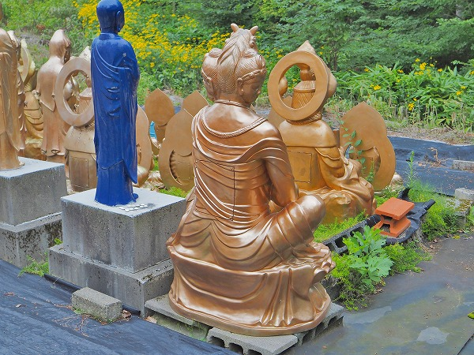
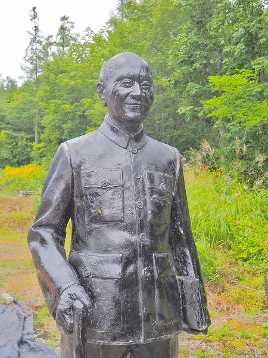

で、北海道は旭川におりますよ。
旭川に
謎の仏像群がある、と聞いたので行ってみることにした。
場所は…これは明らかにしない方が良いのかな。
多分極個人的な場所なので。
旭川の市街から車を走らせること数十分。
車道から未舗装の道を進むと謎の仏像群は見えてくる。
想像以上にデカい！
精々等身大程度の仏像がある感じかな、と高を括っていたがなんのなんの、5ｍ程の巨大なお地蔵さんがズラリと並んでいた。
これはただならぬ事態ぞよ、と気を引き締めて対峙する。

仏像はほとんどが金色に着彩されていて、FRP（強化プラスティック）製と思われる。
どうですかこの迫力！
お地蔵さんから観音サマまで様々な仏像が並んでいるのだ。
しかも、この場所、人が誰も訪れないであろう、メチャ人里離れたところなのだ！
所々青い仏像が混ざっているのは塗装前なのだろうか？
近くで見ると圧倒される。
一体だけ下半身のないお地蔵さんが。
壊れちゃったのかな。
ひとつだけ台座に名前が記されていた。
一応、宗教施設なのだろうか？
兎に角、看板もない、人もいない、ただただ仏像だけが大量に並んでいる他は何もない。
そんな
一切が不明な場所なのだ。
お地蔵さん、アナタは一体どなたなんでしょう？
お地蔵さんの裏には作業小屋のような建物があった。
こちらにも看板などなく、一切が不明であった。
お地蔵さんの先には1/1スケールの仏像が大量に並んでいた。
凄い数である。
更に奥にも金の仏像がズラズラ―っと並んでいる。
入口にある仏像群を眺めるとこんな。
なんかスケール感がバグって見えますね。
気になるのは仏像を監視するように立っている人物像。
台湾初代総統である
蒋介石、なのである。

満面の笑みである。
蒋介石について詳しく知りたければ
こちらに寄るのが良いかと。
それにしても凄い数である。
しかも同じ仏像ではなく、数種類の仏像が並んでいる。
何故、何の目的で誰が何時作ったのか？
全ては謎なのだが少なくとも旭川の片隅にこのような場所が存在する事だけは間違いようのない事実なのだ。
ここを訪れた前日にこの近くで熊の目撃情報があったので、あまり奥の方には近寄らないようにした。
という訳で一切が謎のままこの地を後にすることにした。
いつまでもこのまま存在し続けるのだろうか？それは誰にもわからない。
最後に作業小屋を覗いてみたら蒋介石の像がポツンと一体立っていた。
ここの詳細をご存知の方、是非ともご教示くださいませ！